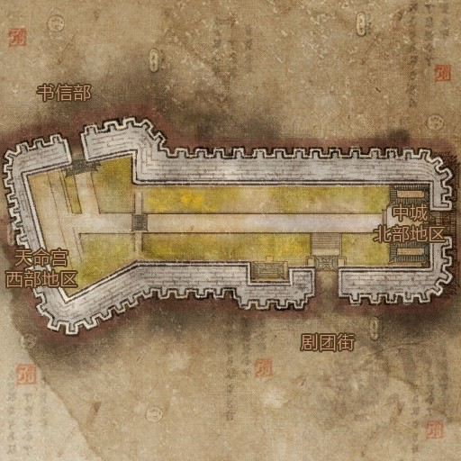

世界地图
龟裂之地
无日峰
御龙林
大漠
水月平原
白青山脉
破天城都
建元城都
西洛
天命宫
天命宫内城
天命宫中城
天命宫外城
永生寺院
仙河村
副本
其他
左将军府
右将军府
天鬼狱一层
天鬼狱二层
天命孵化场
天命孵化场一号BOSS
天命孵化场二号BOSS
大将军府
大龙阁一层
大龙阁二层
中城大道
书信部
书信阁一层
书信阁二层
书信阁秘密通道

中城市场
剧团街
诡面梨园
诡面梨园BOSS
剧团街
剧团街